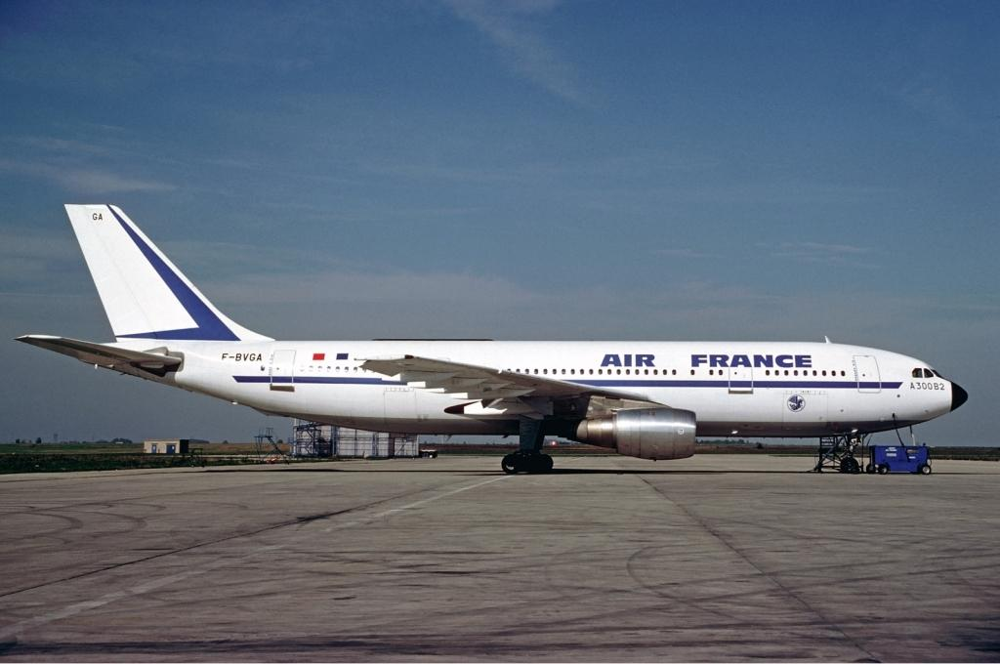
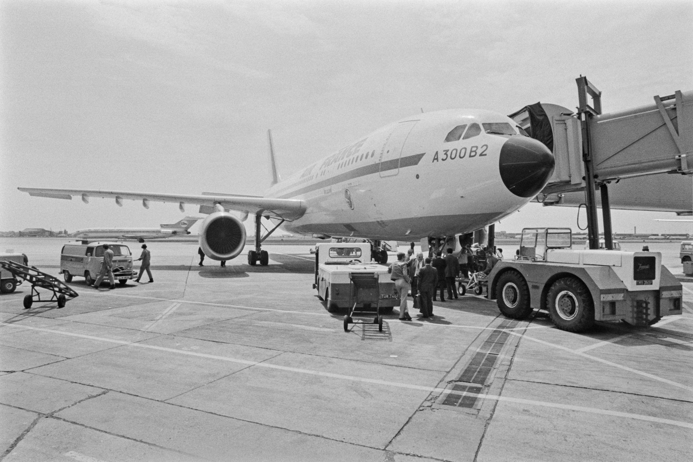
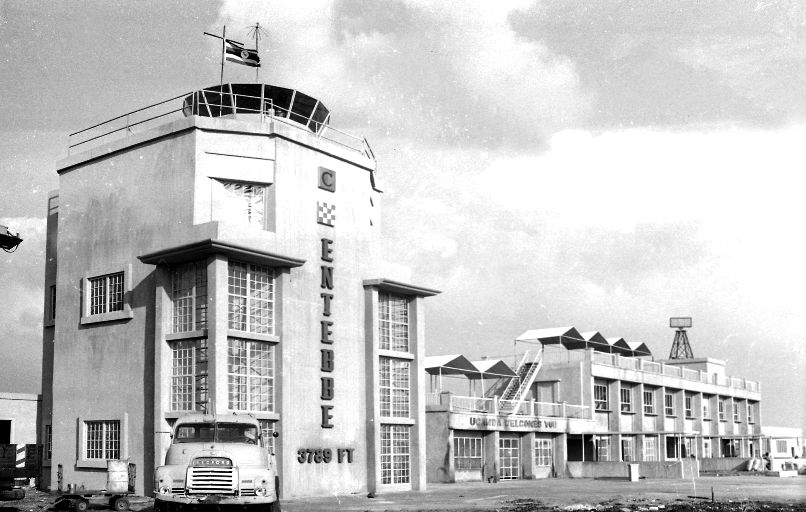
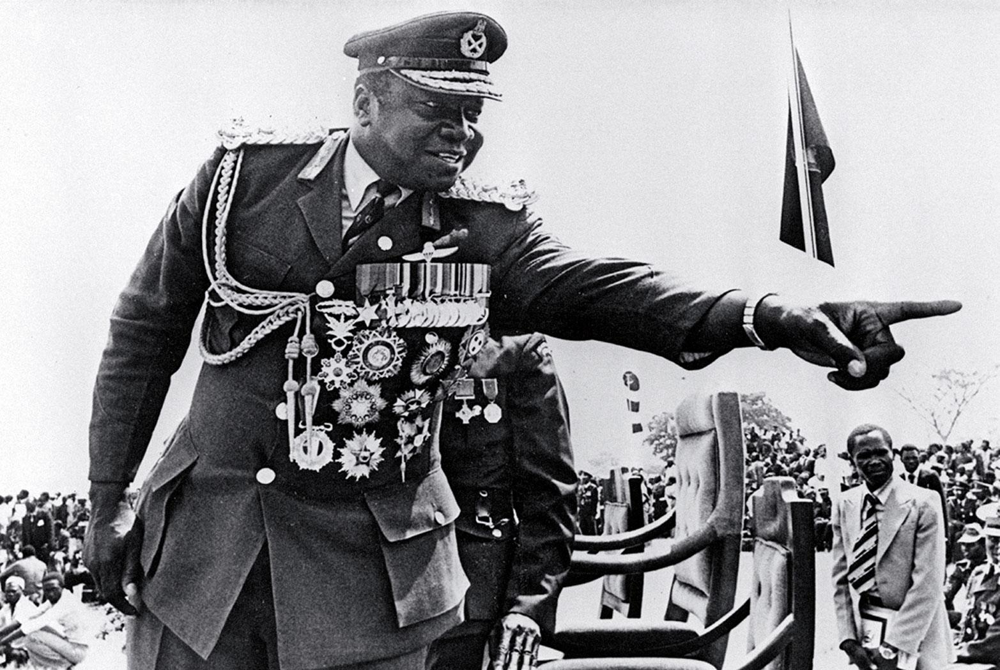
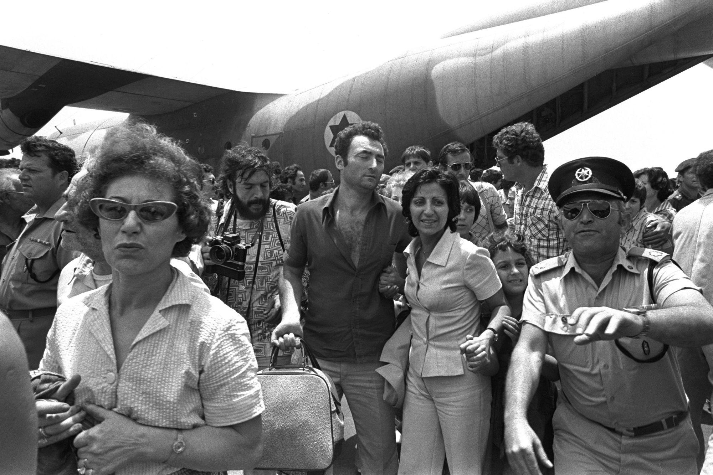

During the 1970s, international aviation faced a growing threat from politically motivated hijackings. Aircraft were sometimes targeted by armed groups seeking to pressure governments and draw attention to political demands. Israel was particularly affected by these threats because of the ongoing Israeli–Palestinian conflict. In June 1976, one such hijacking developed into an international hostage crisis that would lead to one of Israel's most famous military rescue operations.


On June 27, 1976, Air France Flight 139 departed from Tel Aviv, heading to Paris with a scheduled stop in Athens, Greece. After leaving Athens, the aircraft was hijacked by four armed militants, including two members of a Palestinian militant organization and two German revolutionaries. The hijackers forced the pilots to change course, turning an ordinary international flight into a dangerous hostage situation.
The hijacked aircraft was first diverted to Benghazi, Libya, before continuing to Entebbe Airport in Uganda. At Entebbe, the passengers were held inside the airport's old terminal building. The hijackers were supported by additional militants, while the Ugandan government under President Idi Amin assisted in the hostage situation.



At Entebbe, the hijackers separated Israeli and some Jewish passengers from many of the other hostages. Most of the non-Israeli passengers were eventually released, while the remaining hostages faced an uncertain future. The hijackers demanded the release of prisoners held in Israel and other countries, threatening to kill the hostages if their demands were not met. As negotiations continued, Israeli leaders began considering a highly dangerous alternative: a military rescue mission thousands of kilometers from home.
Discover the events behind Operation Entebbe through this historical documentary.
Watch Operation Entebbe DocumentaryRead more about Air France Flight 139, the hijackers and the hostage crisis.
Read About the Hijacking on Wikipedia"The Entebbe crisis became a defining moment in Israeli history, demonstrating the difficult decisions governments face when civilian lives are at risk.
Uganda was ruled by President Idi Amin, whose government supported the hijackers. Entebbe Airport became the location where the hostages were held.